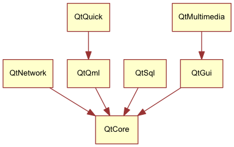

1. Conheça o framework Qt 5¶
Section author: jryannel, micdoug
Note
O código fonte referente a este capítulo pode ser encontrado na pasta assets.
Este livro traz uma visão geral sobre os diferentes aspectos envolvidos no desenvolvimento de aplicações utilizando o framework Qt versão 5.x. O livro é focado na utilização da nova tecnologia de desenvolvimento de interfaces Qt Quick, porém também traz informações necessárias para codificar em C++ o backend e extensões para suas aplicações Qt Quick.
Neste capítulo temos uma visão geral do Qt 5. São mostrados diferentes modelos de aplicações disponíveis para os desenvolvedores e um aplicativo de exemplo para se ter uma ideia do que está por vir nos próximos capítulos. Além disso, este capítulo tem como objetivo dar uma visão geral sobre os conteúdos disponibilizados pelo framework e como entrar em contato com os desenvolvedores do Qt 5.
1.1. Prefácio¶
História
O Qt 4 evoluiu bastante desde 2005, e, apresenta uma base sólida para milhares de aplicativos e até mesmo sistemas móveis e ambientes gráficos desktop completos. O padrão dos usuários de software mudou bastante nos últimos anos. Dos computadores de mesa para notebooks portáteis e nos dias atuais dispositivos móveis. O clássico desktop está sendo cada vez mais substituído por dispositivos móveis sensíveis ao toque conectados a Internet. Devido a isso, o paradigma de construção de interfaces também muda. Antes o padrão de interface do Windows dominava o mundo, hoje gastamos mais tempo desenvolvendo para outros tipos de dispositivos e telas utilizando geralmente linguagens de construção de interfaces diferentes.
O Qt 4 foi desenvolvido com foco no mundo dos desktops, contendo um conjunto de widgets que podem ser utilizados nas principais plataformas. O desafio para os usuários do Qt tem mudado ultimamente. O foco tem se direcionado para o desenvolvimento de interfaces sensíveis ao toque orientadas ao usuário e para o suporte de interfaces modernas compatíveis com as principais plataformas desktop e de sistemas móveis. O Qt versão 4.7 começou a introduzir a tecnologia QtQuick que permite aos usuários criar um conjunto de componentes de interface gráfica a partir de elementos básicos para alcançar uma interface totalmente nova, de acordo com a necessidade do cliente.
1.1.1. Qt5 um novo foco¶
O Qt 5 é uma completa reformatação da versão Qt 4 que foi muito bem sucedida. Com a versão Qt 4.8, a distribuição Qt 4 completou 7 anos de idade. Já era hora de fazer um incrível framework como Qt ainda mais incrível. O Qt 5 se foca nos seguintes aspectos:
- Gráficos marcantes: A tecnologia Qt Quick 2 é baseada no OpenGL (ES) a partir do uso de uma implementação de um grafo de cena. A pilha gráfica refeita permite um novo nível de efeitos gráficos combinados com uma facilidade de uso jamais vista.
- Produtividade: QML e JavaScript são o foco para a criação de interfaces. A retaguarda ou back-end será escrita em C++. A divisão entre JavaScript e C++ permite uma interação mais fácil entre desenvolvedores front-end que se concentram em criar lindas interfaces de usuário e desenvolvedores back-end que utilizam C++ com foco em estabilidade, desempenho e extensão de funcionalidades.
- Portabilidade entre plataformas: Com a consolidada Plataforma de Abstração Qt ou Qt Platform Abstraction, agora é possível portar Qt para uma grande variedade de plataformas de maneira mais fácil e rápida. O Qt 5 tem uma estrutura baseada na separação da plataforma em Qt Essentials (módulos essenciais) e Add-ons (módulos extras), o que permite aos desenvolvedores de sistemas operacionais se focar nos módulos essenciais e leva a um menor tempo de execução como um todo.
- Desenvolvimento aberto: O Qt agora é realmente um projeto aberto hospedado em Qt-Project. O desenvolvimento é aberto e comandado pela comunidade.
1.2. Introdução ao Qt5¶
1.2.1. Qt Quick¶
Qt Quick é o principal componente utilizado para construção de interfaces gráficas com Qt5. O Qt Quick consiste em um conjunto de tecnologias reunidas:
- QML - Linguagem de marcação para criação de interfaces
- JavaScript - A linguagem de scripts dinâmica
- Qt C++ - O conjunto de bibliotecas multiplataforma melhorada

Assim como HTML, QML é uma linguagem de marcação. Ela é composta de tags, chamadas de elementos em QtQuick, que são definidas entre chaves Item {}. Ela foi desenvolvida do zero com foco na criação de interfaces de usuários de maneira rápida e fácil. As interfaces criadas podem ser melhoradas a partir do uso de código em JavaScript. O Qt Quick é facilmente extensível a partir do uso de código nativo em C++. Em resumo, a interface gráfica criada com código declarativo é chamada de front-end e a parte desenvolvida com código nativo de back-end. Estes conceitos permitem a separação dos mecanismos de computação intensiva e operações nativas das suas aplicações da parte de desenvolvimento de interfaces.
Em um projeto típico, o front-end é desenvolvido em QML/JavaScript e o back-end, que geralmente se comunica com o sistema operacional e realiza o trabalho pesado é desenvolvido em Qt C++. Isso permite uma separação natural entre desenvolvedores voltados para o projeto de interfaces gráficas dos desenvolvedores funcionais. Normalmente o código do back-end é testado utilizando o próprio módulo de testes unitários presente no framework Qt e disponibilizado para que os desenvolvedores front-end possam utilizá-lo.
1.2.2. Construindo uma Interface de Usuário¶
Vamos criar uma interface de usuário simples utilizando o QtQuick, demonstrando alguns aspectos da linguagem QML. Vamos construir uma paisagem com um cata-vento que se movimenta.

Vamos começar criando um documento vazio chamado main.qml. Todos os arquivos QML devem terminar com a extensão .qml. Como uma linguagem de marcação (assim como HTML), um documento QML deve conter um e somente um elemento raiz, que no nosso caso é o elemento Image que tem suas dimensões (largura e altura) definida pela imagem exibida por ele:
import QtQuick 2.3
Image {
id: root
source: "../../en/ch01/images/background.png"
}
Como QML não apresenta uma limitação quanto ao tipo de elemento que pode ser usado como raiz, nós usamos um elemento Image com a propriedade source configurada com o caminho para a imagem de fundo que iremos exibir.

Note
Todo elemento possui propriedades, por exemplo, uma imagem tem uma largura definida pela propriedade width, uma altura definida pela propriedade height e também outras propriedades como o source que define o caminho da imagem que será exibida pelo elemento. O tamanho do elemento Image é automaticamente deduzido a partir das dimensões da imagem exibida. Nós também podemos definir explicitamente os valores para as propriedades width e height utilizando medidas em pixels.
Os elementos padrões estão localizados no módulo QtQuick, o qual nós incluímos na primeira linha do código a partir da palavra chave import.
A propriedade especial id é opcional e contém um identificador utilizado para referenciar o elemento a partir de outros trechos de código dentro do documento. Importante: A propriedade id não pode ser modificada após ser definida e ela não pode ser definida em tempo de execução. Usar root como o identificador dos elementos raízes é somente uma convenção utilizada pelo autor, que facilita a referência a elementos raízes em arquivos QML maiores.
Os outros elementos da nossa interface, a haste e o cata-vento estão armazenados em imagens separadas.


A haste deve ser posicionada centralizada horizontalmente em relação a imagem de fundo, partindo da parte inferior da tela. E o cata-vento pode ser posicionado no centro da tela.
Normalmente as interfaces de usuários serão compostas de vários tipos diferentes de elementos e não somente de imagens como neste exemplo.
Image {
id: root
...
Image {
id: pole
anchors.horizontalCenter: parent.horizontalCenter
anchors.bottom: parent.bottom
source: "images/pole.png"
}
Image {
id: wheel
anchors.centerIn: parent
source: "images/pinwheel.png"
}
...
}
Para posicionar o cata-vento centralizado em relação a imagem de fundo, utilizamos uma propriedade composta chamada anchor (âncora). Utilizando âncoras nos permite especificar a localização de elementos utilizando relações entre eles. Por exemplo, para posicionar um elemento de forma centralizada em relação a posição de outro elemento utilizamos ( anchors.centerIn: parent ). Também podemos usar as propriedades left (esquerda), right (direita), top (cima), bottom (em baixo), centerIn (centralizar), fill (preencher), verticalCenter (centro vertical) e horizontalCenter (centro horizontal). Temos que tomar cuidado para utilizar relações que fazem sentido, por exemplo, não podemos ancorar a lateral esquerda de um elemento (left) com a posição superior (top) de outro.
Assim, nós posicionamos o cata-vento no centro da imagem de fundo.
Note
Algumas vezes você pode precisar fazer pequenos ajustes ou desvios em relação a posição centralizada original. Isso pode ser feito a partir do uso das propriedades anchors.horizontalCenterOffset ou anchors.verticalCenterOffset. Ajustes similares podem ser feitos em relação aos outros tipos de âncoras. Consulte a documentação para ver a lista completa de propriedades que podem ser ajustadas a partir do uso da propriedade anchors.
Note
Utilizar uma imagem como um elemento filho do nosso elemento raiz demonstra um conceito importante presente em linguagens declarativas. Você descreve a interface de usuário baseado em camadas e agrupamento, onde a camada superior (nossa imagem de fundo) é desenhada antes e as camadas filhas são desenhadas por cima dela, utilizando o sistema de coordenadas definido pelo elemento que as contém.
Para tornar o nosso exemplo um pouco mais interessante, vamos adicionar um pouco de interatividade ao nosso aplicativo. A ideia é de rotacionar o cata-vento quando o usuário clicar no cenário.
Nós utilizamos o elemento MouseArea e fazemos com que ele cubra toda a imagem de fundo.
Image {
id: root
...
MouseArea {
anchors.fill: parent
onClicked: wheel.rotation += 90
}
...
}
O elemento MouseArea emite sinais quando um usuário clica sobre a área que ele está posicionado. Nós podemos então reagir a este evento atribuindo uma função para a propriedade onClicked. Neste caso, nós referenciamos a imagem do cata-vento e modificamos sua rotação em 90 graus no sentido horário (+90).
Note
A nomenclatura on + NomeDoSinal é utilizada para todos os sinais. Outro aspecto é que todas as propriedades emitem sinais quando tem seu valor alterado. A nomenclatura neste caso é:
on+NomeDaPropriedade+Changed
Por exemplo, você pode monitorar mudanças na propriedade width utilizando onWidthChanged: print(width).
Agora o cata-vento irá se mexer, mas de forma brusca. A propriedade de rotação é modificada imediatamente após o clique. O que nós queremos é que o catavento rotacione 90 graus de forma suavizada durante um período de tempo. É aí que o uso de animações se torna útil. Uma animação define de que forma mudanças em uma propriedade são distribuídas durante um intervalo de tempo. Para habilitar este comportamento nós utilizamos um tipo de animação chamado property behavior. A palavra chave Behaviour especifica uma animação para uma propriedade que será aplicada toda vez que esta sofrer uma alteração de valor. Em resumo, toda vez que uma propriedade é alterada, a animação é executada. Esta é uma das diversas maneiras que podemos declarar uma animação em QML.
Image {
id: root
Image {
id: wheel
Behavior on rotation {
NumberAnimation {
duration: 250
}
}
}
}
Agora quando a propriedade rotation do cata-vento for alterada ela será animada utilizando um NumberAnimation com uma duração de 250 ms. Então cada rotação de 90 graus levará 250 ms.

Note
Você não verá o cata-vento distorcido como mostrado na imagem. A imagem está desta maneira somente para indicar o movimento de rotação. Porém existe uma imagem com este efeito no diretório assets. Talvez você queira utilizá-la.
Agora o cata-vento está muito melhor. Espero que este exemplo tenha proporcionado uma pequena noção sobre como a programação com Qt Quick funciona.
1.3. A Estrutura do Qt¶
O Qt 5 é estruturado em um grande conjunto de módulos. Um módulo consiste de uma biblioteca que pode ser utilizada pelos desenvolvedores. Alguns módulos são essenciais para o funcionamento do framework em uma plataforma. Eles formam um conjunto que chamamos de Módulos Qt Essentials. Já, outros módulos são opcionais e formam o que chamamos de Módulos Qt Addon. Normalmente a maioria dos desenvolvedores não precisam usar estes módulos, porém é bom saber que eles apresentam recursos adicionais que podem ser de grande ajuda em alguns casos.
1.3.1. Módulos Qt¶
Os módulos presentes na categoria Qt Essentials são essenciais para que o framework funcione em uma plataforma. Eles fornecem a base para desenvolver aplicações modernas utilizando o Qt 5 e a tecnologia Qt Quick 2.
Módulos Essenciais - Qt Essentials
O conjunto mínimo de módulos do framework Qt 5 necessários para programar utilizando QML.
| Módulo | Descrição |
|---|---|
| Qt Core | Classes do núcleo não relacionadas com tarefas gráficas que são utilizadas pelos outros módulos. |
| Qt GUI | Classes base para construção de componentes de interfaces gráficas. Inclui OpenGL. |
| Qt Multimedia | Classes para manipulação de áudio, vídeo, rádio e câmera. |
| Qt Network | Classes que tornam a utilização de comunicação em rede mais fácil e portável. |
| Qt QML | Classes base para as linguagens QML e JavaScript. |
| Qt Quick | Framework declarativo que permite a construção de aplicações altamente dinâmicas com interfaces de usuário personalizadas. |
| Qt SQL | Classes utilizadas para integração de banco de dados utilizando SQL. |
| Qt Test | Classes para construção de testes unitários para aplicações e bibliotecas que utilizam o framework Qt. |
| Qt WebKit | Classes para implementação do WebKit2 e sua API QML. Veja também o módulo Qt WebKit Widgets. |
| Qt WebKit Widgets | Classes para implementação do WebKit1 e suas classes baseadas no QWidget para o Qt 4. |
| Qt Widgets | Classes que extendem o módulo Qt GUI com widgets C++. |

Módulos Qt Addon
Além dos módulos essenciais, o Qt oferece módulos adicionais para os desenvolvedores, que não fazem parte da distribuição básica. Segue uma breve lista de módulos adicionais disponíveis.
- Qt 3D - Um conjunto de APIs que permitem programar gráficos 3D de forma fácil e declarativa.
- Qt Bluetooth - APIs C++ e QML para utilizar a tecnologia Bluetooth.
- Qt Contacts - APIs C++ e QML para acessar lista de endereços e contatos.
- Qt Location - Permite a utilização de funcionalidades de localização, posicionamento, mapas, navegação através de interfaces QML e C++. Backend NMEA para posicionamento
- Qt Organizer - APIs C++ e QML para acessar organizadores de eventos (todos, events, etc.)
- Qt Publish and Subscribe
- Qt Sensors - Acesso a sensores através de interfaces QML e C++.
- Qt Service Framework - Permite as aplicações ler, navegar e escutar notificações de mundança entre processos.
- Qt System Info - Permite acessar informações relacionadas com o sistema e seus recursos.
- Qt Versit - Suporte para os formatos vCard e iCalendar.
- Qt Wayland - Somente para Linux. Inclui a API
Qt Compositor(servidor), e plugin para a plataforma Wayland (clientes). - Qt Feedback - Respostas táteis e sonoras para ações de usuarios.
- Qt JSON DB - Armazenamento no-SQL para objetos.
Note
Como estes módulos não fazem parte da distribuição principal, seus status de desenvolvimento são diferentes, variando de acordo com a quantidade de desenvolvedores que contribuem para sua manutenção e teste.
1.3.2. Plataformas suportadas¶
O Qt suporta uma grande variedade de plataformas. As principais plataformas desktop e embarcadas são suportadas. Através do Qt Application Abstraction, atualmente portar Qt para outras plataformas é uma tarefa mais fácil.
Testar o Qt 5 em uma plataforma é uma tarefa que leva bastante tempo. Um subconjunto de plataformas foi selecionado pelo projeto Qt para compor o conjunto de plataformas referência. Estas plataformas são altamente testadas, o que garante um bom nível de qualidade. Mas ponha na sua mente: nenhum código é livre de erros.
1.4. O Qt Project¶
Extraído de qt-project wiki:
“O Qt Project é uma comunidade meritocrática baseada no consenso composta por pessoas interessadas no framework Qt. Qualquer um que compartilha deste interesse pode se juntar a comunidade, participar nos seus processos de decisões, e contribuir para o desenvolvimento do Qt.”
O Qt-Project é a organização que mais contribui para o desenvolvimento da parte de código livre do framework Qt. Ela forma a base para outros usuários contribuírem. O maior contribuidor é a DIGIA, que detém os direitos comerciais sobre o Qt.
O Qt pode ser utilizado sob a licença de código livre ou comercial. A licença comercial é utilizada por empresas que não podem ou não vão cumprir com os deveres da licença de código livre. Sem a licença comercial estas empresas não poderão utilizar o Qt devidamente, o que não permitiria a DIGIA contribuir tanto para o código do Qt-Project.
Existem muitas empresas ao redor do mundo que mantém suas atividades baseadas em consultorias e desenvolvimento de produtos utilizando o Qt e suas plataformas. Existem vários projetos de código livre e desenvolvedores que utilizam Qt como sua principal plataforma de desenvolvimento. É muito bom fazer parte desta comunidade vibrante e trabalhar com estas ferramentas e bibliotecas incríveis. Isso pode fazer de você uma pessoa melhor? Talvez:-)
Contribua aqui: http://wiki.qt-project.org